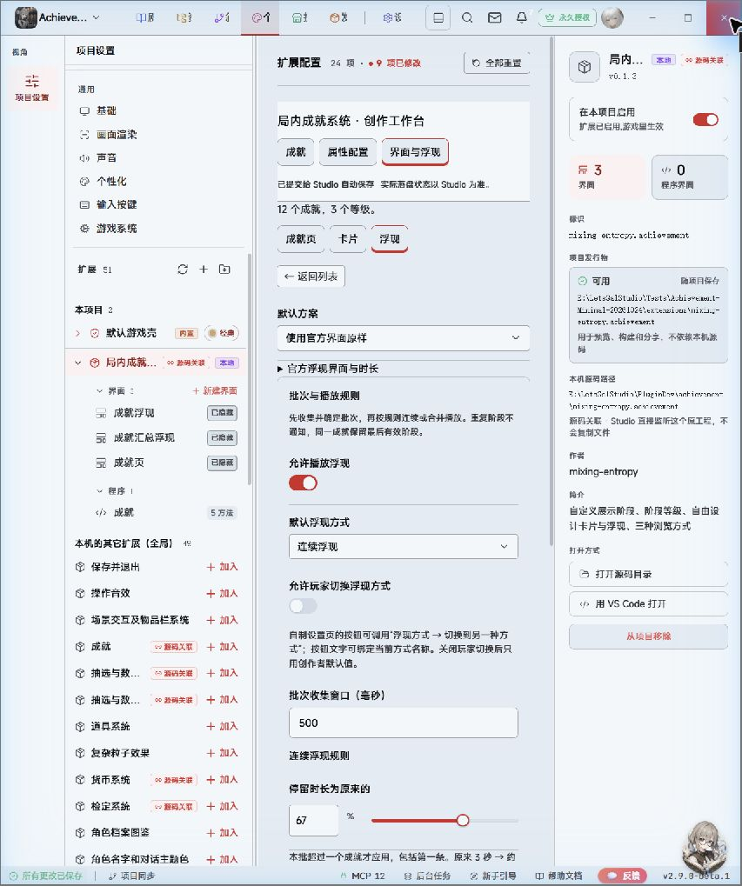
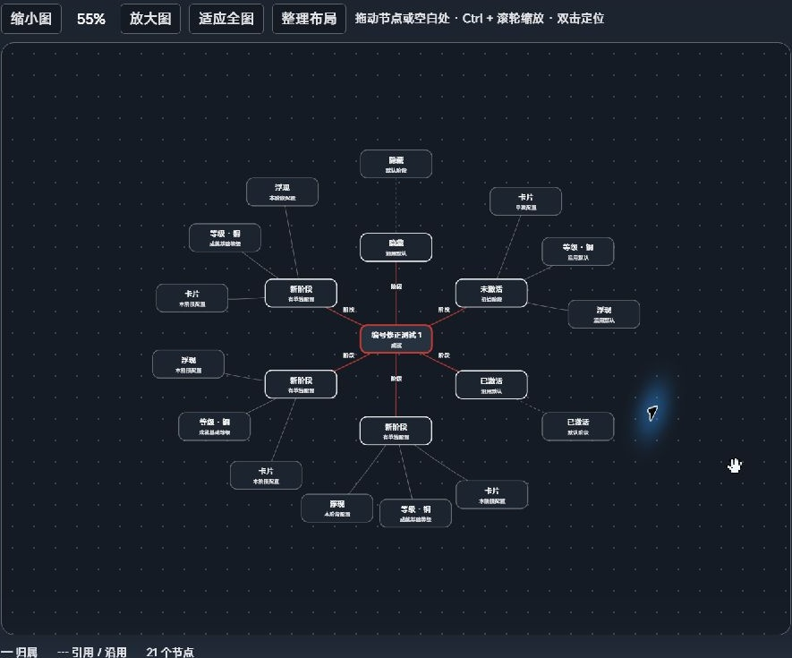
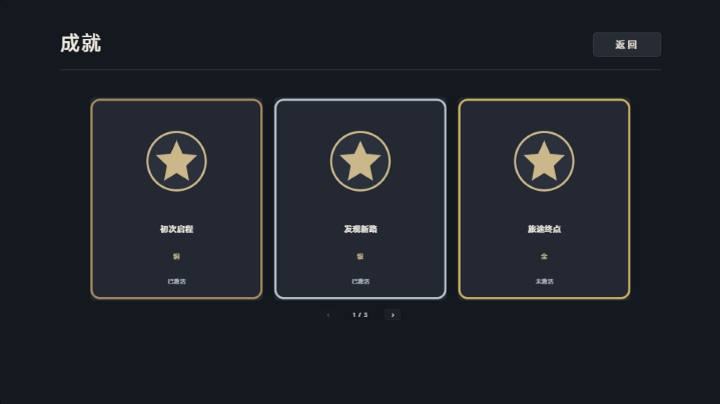
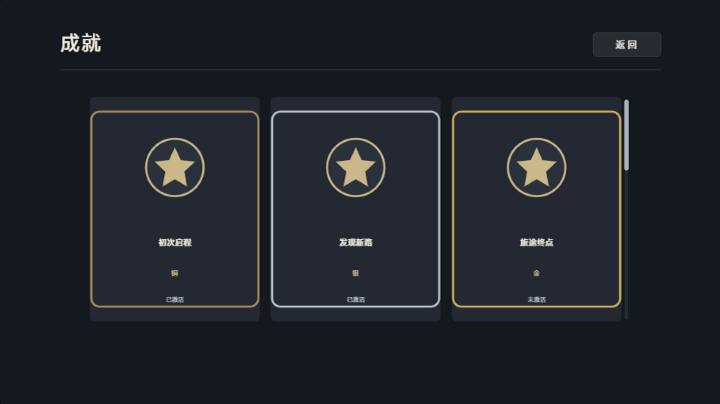
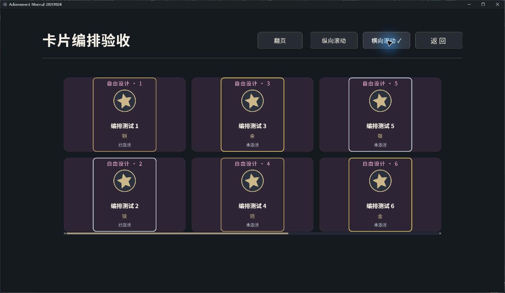

局内成就系统使用说明
此手册对应局内成就系统 0.2.0，适用 LetsGal Studio 3.0 正式版。你可以为成就分组、编排展示阶段、设置连续或合并浮现，并把指定阶段关联到 Steam 成就。
这个版本能做什么
每个成就只有一个当前展示阶段。默认提供“隐藏”“未激活”“已激活”，它们都是普通预设名称；创作者可以改名、修改内容或添加中间阶段。没有额外的“是否激活”开关，也不会根据铜银金推断达成历史或自动升级。
成就提供编号、基础名称、说明、图标和等级；阶段决定当前显示内容、是否入库、使用哪个等级。卡片和浮现跟随同一阶段。成就页支持翻页、纵向滚动和横向滚动；创作者选择固定方式或开放哪些方式给玩家。默认提供铜银金边框，页面、卡片和浮现均可设计。
创作者在扩展设置中维护成就和阶段。每位玩家的当前阶段由官方扩展共享存档保存，条件、监听与宏由外部系统决定。
在 Studio 3.0 中使用
成就图标、阶段图标和外观贴图可以从工程素材的子目录选择。演出时间轴可以调用设置分组可见性、切换阶段、读取成就信息、刷新和浮现方式。打开成就页放在普通剧情里，让玩家浏览后返回。单条和汇总浮现按配置时长结束，Esc 和右键保留给玩家的界面操作。
此插件记录本作品的局内成就，游戏在离线状态也能运行。发行作品如需 Steam 成就，须另外配置 Steamworks 的成就编号，并选定对应的获得阶段。引擎的片段画廊按角色分类，用于管理片段回放。
成就分组
- 进入「属性配置 → 分组」，点击「新建分组」。填写组名并设置初始是否显示。可以按名称或编号搜索已有成就，选择后即加入。用上移、下移调整分组和组内卡片的顺序。
- 可在组内分别选择默认等级、卡片和浮现方案。在「成就 → 基础资料 → 所属分组」勾选一个或多个组，再为每一项选来源。例如等级沿用「探索 · 银」，浮现沿用「剧情 · 来信」。仅勾选成员关系时，原有外观继续生效。某阶段可以单独改等级、方案、内容或时长。
- 要交给玩家使用，在「界面与浮现 → 成就页」开启「允许玩家按分组筛选」。打开成就页先看全部；点「分组 · 全部」按钮依次切到可见组，再回到全部。每条卡在全部中只列一次。自制页面可添加标识符为
achievement-group-filter的按钮，布局由作品决定，通过「打开成就页」进入即会绑定。 - 在剧情插入「设置分组可见性」，选择分组和是否显示。组名公开后，空组也可进入；问号卡照常显示问号。隐藏入口不会移除其他组或全部页面中的卡。显隐和解锁记在玩家共享存档，玩家当前浏览哪一组只在本次页面有效。
移出成员、删除组或清空被使用的默认项时，确认框按成就名称列出将保留的等级、卡片方案或浮现方案。确认后，成就保留当时的等级或方案，之后继续跟随所保留方案的内容。取消可返回编辑。
展示阶段分层
在「成就 → 阶段 → 阶段层级」开启「按层级获得」，将每个阶段填到对应层。数值越大，层级越高。未开启时仍可按原方式切换。开启时按现有阶段依次排层。之后新加的阶段会单独排在最高层，也可以手动调层或与其他阶段同层。新增默认阶段时，每条启用分层的成就分别追加到自己的最高层。恢复以前移除的阶段时，沿用已记录的层级。
例如四个阶段依次填 1、2、2、3。剧情先获得第二阶段，再触发第三阶段，会保留先到的第二阶段；触发第四阶段则推进。直接获得最高层也可以，经过的低层不会补发。重复、同层、低层的操作会安静跳过，剧情继续。只要还没有这条成就的共享记录，初始卡片只是展示；第一次有效获得会登记并按剧情勾选项浮现。读旧剧情档、重新开局或重跑剧情仍沿用已保存的阶段。给已有作品显式排层时，已保存的阶段编号按作者给它指定的层级参与比较。
给展示阶段关联 Steam 成就
- 在「成就 → 阶段」选中目标阶段，进入「阶段内容」，在「关联 Steam 成就」填入 Steamworks 后台的 API Name，例如
ACH_TRUE_END。保留原大小写。留空或清空就只记录局内阶段。 - 剧情继续使用「成就操作」，选择这条成就和目标阶段即可。每条成就分别配置关联，即使沿用同一套默认阶段，也可以填不同的 API Name。「切换时浮现」只控制局内提示。
- 分层时，若「离开」和「留下」同层，先获得「留下」就只提交它的关联。直接到更高层的「真结局」只提交真结局。互斥分支若对应同一项 Steam 成就，可以填写同一个 API Name。
初始卡片出现、打开成就页、读档回放都不会发起解锁。快进中实际获得阶段也会提交。项目开启 Steam 集成并填写本作 App ID 后，用连接 Steam 的桌面导出验证。预览、网页和 Steam 不可用时，剧情照常保存本地阶段。以后读档或给旧阶段补填编号，都不会追补历史解锁。已由 SDK 接收并排队的请求由 SDK 自动重试。
离线手册与 AI 资料
本页是插件的使用手册，提供目录跳转、关键词筛选和浏览器打印，可直接打开 USER-GUIDE.html，无需启动网站或连接网络。“成就资料 Wiki”指计划中的作品资料查阅／备注功能，与本手册不同。
完整资料包同时包含插件、离线手册和 AI Skill。运行 python tools/install-ai.py 先查看安装位置，加 --apply 安装两份资料；已有不同内容时，再加 --upgrade 明确更新，原文件会先保全。插件主体仍在 Studio 中导入，不由资料安装器修改。
本机已有 letsgal-authoring 时，Skill和手册分别位于用户目录下 .letsgal-authoring/plugins/mixing-entropy.achievement/0.2.0/SKILL.md 和同目录的 docs/USER-GUIDE.html。主技能通过插件索引读取Skill；人工使用直接打开手册。没有主技能时，安装器放入所选AI的独立插件Skill目录，路径以预览结果为准。
使用旧版插件时，请读取对应版本附带的手册与 Skill。
安装和启用
- 在 Studio 的个性化面板导入 mixing-entropy.achievement 文件夹。使用成品选复制导入，持续开发选关联源码工程。
- 将“局内成就系统”加入项目并启用。
- 打开扩展的独立配置页；玩家阶段存档会在首次运行时自动建立。
- 进入“成就”工作区，点击“＋ 新建成就”；左侧选对象，右侧编辑基础资料和阶段。
0.2.0 无需创建或绑定成就数据表。已有扩展共享存档继续使用；只存在旧数据集合中的玩家记录不会自动导入。
工作台入口与自动保存
顶部只有“成就”“属性配置”“界面与浮现”三个工作区，每次显示当前区。左侧选对象，右侧修改；宽度足够时，旁边显示有效内容示意，窄窗口移到下方或使用列表／详情切换。

| 入口 | 配置内容 |
|---|---|
| 成就 | 左侧搜索和选择成就；右侧“基础资料”编辑名称、说明、图标、基础等级，“阶段”编辑当前选中的阶段 |
| 属性配置 → 等级 | 等级名称、关联卡片／浮现方案、被哪些成就或阶段引用 |
| 属性配置 → 默认阶段 | 共用阶段内容与表现，查看沿用它的成就并定位过去 |
| 界面与浮现 → 成就页 | 成就页选择、滚动方向和开放给玩家的浏览方式 |
| 界面与浮现 → 卡片 | 通用卡片方案；“模板与尺寸”提供官方编排路径和最近测得的尺寸 |
| 界面与浮现 → 浮现 | “播放规则”“合并汇总”和通用浮现方案列表 |
对象列表支持名称／编号搜索，每页 50 项；搜索不改变正在编辑的对象，也不改变游戏中的排列。阶段始终显示为选择块：8 个以内自动换行，超过 8 个默认只显示一行，点击右侧“展开”查看全部，再点“收起”恢复单行。展开时可搜索阶段名称或编号，选择和右键移除操作保持一致。阶段顺序不代表自动升级关系。
顶部“工作台缩放”可通过滑块或加减按钮在 75%—150% 之间调整，点击“还原”回到 100%。它只缩放插件配置区，控制条、Studio 外围界面和游戏画面保持原比例。缩放值在本次打开的工作台内保留，切换工作区仍有效；重新打开后从 100% 开始。
选择和开关立即提交；文字、数值与 CSS 停止输入约半秒后校验提交，失焦时立即尝试保存。无效输入不覆盖有效配置，切换工作区再回来仍保留草稿。草稿只在本次打开期间有效，关闭工作台后不会保留。
顶部显示“自动保存”“尚有未保存输入”或“保存被拒绝”。“自动保存”说明保存方式，实际落盘看 Studio 的保存状态。外部同时修改同一字段时暂停自动提交，核对后选择“使用最新值”或“核对后保留草稿”。
正常时，状态栏只显示“自动保存”。存在草稿时才补充未保存项数及关闭后的影响；保存被拒绝、字段冲突或输入无效时，按对应提示处理。
在成就内，先选阶段，再使用“阶段内容／卡片／浮现”页签。阶段内容直接配置名称、说明、图标和等级，来源为所属成就基础资料或本阶段自定义，不继承上一阶段。初始阶段只改变新玩家的起始配置，不改已有记录。
卡片和浮现默认显示沿用摘要；需要差异时点“单独设置内容”“单独调整外观或 CSS”或“单独设置界面与时长”。恢复内容、恢复本项表现和恢复某个元素 CSS 分别操作，不会一起抹除其他层次。通过来源按钮进入共用配置后，可用“返回原编辑位置”回到原成就和阶段。
表现方案可沿用成就的默认方案、直接沿用通用默认方案、指定通用方案、跟随阶段等级或完全单独配置。背景、边框、动效在同级类别中切换；CSS 使用元素列表和代码编辑区，按元素单独覆盖。默认卡片／浮现方案分开管理，修改共用方案会影响引用它的阶段。
浮现界面与时长优先采用阶段专用值，其次通用浮现方案，最后使用官方浮现默认值；未指定默认方案时，可在浮现工作区展开“官方浮现界面与时长”修改最后一层默认值。播放规则中的批次、排序和连续／合并方式由模块处理，无需另写宏。
有效内容示意读取已提交配置；共用方案可选参考成就和阶段，选择不改变玩家进度。示意只帮助核对内容，实际位置、动画和 CSS 效果仍在官方预览检查。官方编辑器暂无直接跳转指定画布的扩展接口，工作台提供操作路径。
排队中的成就已离开目标阶段时跳过原通知；播放中切到其他阶段会结束原浮现。只改配置、打开成就页、读档恢复和重复设置同一阶段不会新发通知。
关联图：查看来源与跳转编辑
在“成就”中选择一个对象，点击名称旁的“查看关联图”。初始布局以所选成就为中心，向外列出各阶段。阶段超过 50 个时分组浏览。
- 完整沿用默认的阶段，只连接对应的“默认阶段”；选中它，点击“展开卡片、等级、浮现”查看三部分。
- 有单独配置的阶段，直接连接“卡片、等级、浮现”。例如只改卡片时，卡片标记“单独配置”，等级和浮现仍可标记“沿用默认”。
- 选中卡片、等级或浮现，再点击“展开……来源”，查看它使用的通用方案、等级配置、模板或界面；不需要时可以收起。
名称、说明等内容在阶段摘要中查看。实线表示归属，虚线表示引用或沿用。相同共用配置合并为一个节点；不输出的卡片或浮现仍保留配置关系，并标记“不输出”。默认阶段使用“成就基础等级”时，等级节点会说明当前参考成就解析出的等级。
| 操作 | 效果 |
|---|---|
| 单击节点 | 选中，突出相关连线，显示配置摘要 |
| 拖动节点 | 关联节点会受到弹簧牵引；松手后轻微回弹并逐渐停稳 |
| 拖动空白处 | 平移关联图 |
| Ctrl＋滚轮 | 以鼠标位置为中心缩放关联图，外层页面保持不动；普通滚轮滚动工作台，也可用“缩小图／放大图”按钮 |
| 适应全图 | 调整视角，显示当前已展开节点 |
| 整理布局 | 恢复当前节点的分层布局和视角 |
| 双击节点，或选中后按 Enter | 定位对应编辑位置；也可点击“定位编辑” |
| 查看引用成就 | 展开共用配置的反向引用，每页 20 个阶段；点击条目可定位，图里相同成就只显示一次 |
| 返回关联图 | 保留本次的缩放、拖动位置、选中节点和展开状态 |
成就、阶段、卡片／浮现、等级、默认阶段与通用方案会定位到对应工作台编辑项。界面节点定位到只读引用详情，显示实际界面及官方编排路径；卡片模板详情另有“查看模板与尺寸”。当前编辑期 SDK 没有直接打开指定官方画布的接口，需按路径在官方编辑器打开。
关联图从已有配置生成，拖动、缩放、展开和选择不修改成就定义或玩家进度。图状态仅保留在本次打开的工作台内。

从隐藏到提示，再到完整展示
- 在“成就”点击“＋ 新建成就”，编号填 first_step（也可留空），点“创建”。切到“基础资料”，填写名称“初次启程”、说明“故事从此时开始”、等级 bronze 和图标。
- 切到“阶段”，将初始阶段设为“隐藏”。新玩家的成就库没有这张卡片。
- 点击“＋ 本成就阶段”，在“阶段内容”将名称改为“获得线索”；名称显示和说明显示选择“本阶段自定义”，分别填“远方的邀请”“去车站看看吧”。在“卡片”选择“显示卡片”；需要通知时，在“浮现”开启“进入此阶段时浮现”。
- 获得线索的剧情中添加“成就操作”：先选“初次启程”，目标阶段选“获得线索”。需要提示玩家时勾选“切换时浮现”。卡片和浮现均显示线索内容。
- 事件完成后再添加同一方法，目标选择“已激活（revealed）”。默认显示基础名称、说明、图标与等级；不需要再执行一次激活。
- 若后期需要升级，新增例如“大师”阶段并给它指定 gold 等级，剧情直接切到该阶段。系统只保存当前阶段，不额外记一套激活事实或自动补齐低等级记录。
阶段编号稳定，改名不会改变编号。方法块可下拉选择成就和阶段，也可按编号或变量指定。需要限制跳转时，选择“设置执行前的阶段限制（可选）”，指定预期当前阶段；不符则整项跳过。目标必须存在，不按列表顺序自动“加一”。
阶段下拉框跟随所选成就，只列出它实际拥有的阶段，不混入其他成就的自定义阶段。初始默认提供隐藏、未激活、已激活三个共用阶段；修改默认配置或为此成就移除阶段后，选项跟随实际配置。已移除或不属于该成就的旧阶段编号只在旁边提示，不作为选项；请重新选择，系统不会擅自改写原参数。使用变量指定成就时，编辑器无法提前确定运行时取值，仍按阶段编号或变量填写。
若成就编号、目标阶段或阶段限制的参数格式无效，旁边会显示原因和原值；仅打开参数窗口不会自动改写。重新选择有效值才提交修改；保存被拒绝时会提示，原参数保持。官方界面编辑器的“点击时 → 调用扩展方法”只支持固定值，因此入口显示“按编号指定／按阶段编号指定”；支持变量的剧情和条件入口保留变量选项。
成就列表与默认阶段配置
选择成就后，阶段选择条与编辑范围常驻显示；编号为稳定引用，改名称不会改变编号。列表、阶段条或当前对象的可见移除按钮均能进入相应操作。
| 位置 | 移除范围与保护 |
|---|---|
| 成就列表 | 右键打开移除确认；玩家已有阶段记录保留 |
| 阶段条／阶段选择列表 | 只移除当前成就的目标阶段；初始阶段与最后可用阶段受保护 |
| 默认阶段列表 | 影响沿用者；已建立完整专用阶段的成就保留自己的版本 |
| 等级／方案列表 | 被引用的等级、最后等级、默认或被引用方案不能删除 |
| 排序规则／优先值 | 只移除目标规则或其一个优先值；同时保留上移、下移和拖动手柄 |
| 元素 CSS 的非文本区域 | 只移除当前元素、当前使用位置的覆盖，不删除官方界面元素 |
右键和可见按钮使用相同保护。文本与 CSS 编辑框保留复制／粘贴菜单。保存失败时保留原数据并提示原因。阶段内容恢复不包括卡片或浮现表现；各层恢复按钮说明自己的范围。
“默认阶段配置”是共用设置，初始提供下表三个阶段。这里修改阶段名称、显示内容或等级，会影响仍沿用它的成就；添加默认阶段后，各成就都可使用。每个阶段使用“成就基础配置”时，分别读取所属成就自己的名称、说明、图标或等级。
阶段信息、等级与本阶段内容一起沿用默认阶段；在成就内修改它们后，成为该成就的专用内容，使用“恢复阶段信息与内容”可恢复。卡片展示与阶段浮现各自保存，改其中一项不会把另一项变成专用配置；各自的“恢复默认阶段的本项表现”只恢复本项。“＋ 本成就阶段”只增加该成就可选的阶段。
“从此成就移除阶段”只让当前成就不再使用它，方法下拉框也不再列出；其他成就仍可使用。被移除的默认阶段可通过“恢复已移除的默认阶段”找回。如果希望一个阶段完全不对玩家显现，在“卡片展示”选择“不生成卡片”，并关闭“阶段浮现”。该阶段仍可被方法切换，与移除阶段不同。隐藏预设已提供这种组合。
“移除此默认阶段”会从共用配置中移除该阶段，已经建立完整专用配置的成就仍保留自己的版本。当前作为初始阶段的选项须先更换初始阶段，最后一个可用阶段不能直接移除。默认配置为空时使用内置三个预设，不表示禁用所有阶段。
配置展示阶段
| 默认预设 | 编号 | 默认表现 |
|---|---|---|
| 隐藏 | hidden | 没有卡片、不浮现 |
| 未激活 | unknown | 问号名称、问号说明、未知图标、中性边框 |
| 已激活 | revealed | 使用成就基础名称、说明、图标和等级 |
这些名称不触发特殊规则。“已激活”可以改名为“完成”或其他名称，仍只是一个阶段。可以在默认阶段配置中统一修改，或在单个成就下面单独修改；共用阶段与专用阶段各最多 10000 行。
| 设置 | 作用 |
|---|---|
| 初始展示 | 尚无记录时使用，默认未激活；已有记录不随此项变动 |
| 阶段名称 | 供创作者辨认，可选择向玩家提供 |
| 卡片 | 选择显示卡片或不生成卡片；单独配置内容、外观、CSS |
| 浮现 | 是否在进入此阶段时浮现，以及独立内容、界面、时长、外观、CSS |
| 名称／说明显示方式 | 使用成就基础配置、本阶段自定义、不显示 |
| 图标显示方式 | 使用成就基础配置、本阶段自定义、默认未知图标、不显示 |
| 本阶段等级 | 使用成就基础等级，或指定本阶段等级 |
| 卡片／浮现 → 显示等级 | 控制等级文字；等级关联的外观仍可生效，不改变可查询的当前等级 |
| 卡片／浮现 → 显示阶段名称 | 开启后提供 stageName；是否放到卡片上仍由 UI 决定 |
各阶段可沿用基础配置中的名称、说明、图标和等级，也可单独设置。“使用成就基础配置”读取所属成就的基础内容，不继承上一阶段。“本阶段自定义”留空就是空，不回退到基础内容。基础说明可换行、最多 1000 字符。
新增阶段自动生成稳定编号。共用阶段和本成就阶段都可按上述范围移除，当前初始阶段不能直接移除。已有记录指向被移除阶段时隐藏，直到明确切到有效阶段；新增阶段不会复用被删除编号。
方法块
| 方法 | 配置 | 结果 |
|---|---|---|
| 成就操作 | 成就、目标展示阶段、切换时浮现；可选预期当前阶段 | 切换阶段并自动刷新 |
| 设置分组可见性 | 分组、显示开关 | 显示或收起该组的玩家筛选入口 |
| 读取成就信息 | 成就、阶段编号／阶段名称／等级编号／等级名称 | 返回文本，可用于条件比较 |
| 打开成就页 | 无 | 刷新后打开已配置的页面 |
| 刷新成就界面数据 | 无 | 仅重建界面数据，通常自动执行 |
| 浮现方式 | 读取、切换、连续、合并或恢复默认 | 返回当前方式；创作者开放切换后保存玩家偏好 |
读取阶段／等级优先比较编号，如 revealed、gold；名称适合展示。读取等级不受“是否向玩家公开等级”限制。没有“读取激活状态”选项。未知成就或不存在的目标阶段报错；被移除的当前阶段仍可读到保存编号，名称和等级为空。
“切换时浮现”默认开启，但还需全局允许播放，并开启目标阶段的“进入此阶段时浮现”。重复设置相同阶段不重复通知；切回先前阶段属于新变化，可以浮现。浮现只通知当前阶段，不补播过去经过的阶段。
刷新一般无需手动添加：阶段切换和打开成就页都会刷新。内部界面的蓝色直接显示入口继续隐藏，页面编辑和扩展设置选用仍保留。世界状态只需在条件成立时调用“成就操作”，本扩展不实现条件组或监听。
成就与页面配置
成就编号应稳定且唯一；改名称时保留编号。编号使用字母、数字、点、横线、下划线，以字母或数字开头，最长 128 字符。等级不配置时使用 bronze、silver、gold；自定义列表非空时替代默认等级，需要包含所有仍在使用的等级编号。基础图标留空时使用默认星形。
选择“界面与浮现 → 成就页”选择成就页、滚动方向和玩家切换权限。在“浮现 → 播放规则”设置总开关；默认界面与时长在“浮现 → 浮现方案”维护。官方默认时长为 3000 毫秒，允许 300–60000 毫秒；单个阶段可以另选界面和时长。翻页、纵向及横向滚动的开放方式和 UI 编排见下文。
自己设计 UI
在个性化的成就扩展下展开界面，编辑“成就页”。页面结构可自由修改；选中“成就列表”，进入其内部 card 模板，可修改单个成就的背景、边框、图标和文字。默认使用 5 列、2 行、间距 24 的分页布局，每页最多十张卡片；可以自行修改行列和间距。
默认翻页／滚动只在官方 UI 编辑器设置：打开成就页，单击“双击编辑卡片 · 成就列表”，关闭“滚动模式”使用翻页，开启使用滚动。行、列、间距和列表大小也由官方页面保存。扩展不再提供另一份默认浏览设置，保存后重新打开游戏中的成就页生效。
扩展“界面与浮现 → 成就页”只补充“滚动方向”和“允许玩家切换浏览方式”。滚动方向为“从上到下”或“从左到右”，只影响官方列表已开启滚动时的默认方向；不会把官方翻页改成滚动。默认关闭玩家切换。开启后，可勾选额外开放的翻页、纵向滚动、横向滚动；官方页面的默认方式始终可用，只有两种以上时才显示切换按钮。例如官方默认翻页、额外只勾横向滚动，玩家只看到翻页和横向滚动。
官方编辑器的图层名称为“双击编辑卡片 · 成就列表”。单击列表设置整页行列；双击画布中的列表区域，进入“网格项模板”，这里编辑单张成就卡片。列表图层名是作者提示，运行使用稳定标识符 achievement-list，不把提示文字显示给玩家。
三种方式共用同一份卡片模板。列表的列数、行数和间距决定一屏如何编排：纵向先排满一行再向下延伸，横向先排满一列再向右延伸。横向支持鼠标滚轮、横向滚动输入和底部滚动条；列表获得键盘焦点后也可用左右键、Home、End。每张卡片内部的文字、图片、边框、按钮、数据绑定及高级 CSS 保留。
以下配置截图摄于 Studio 2.8.0-beta.1，供定位浏览选项参考。关闭玩家切换时仅使用作者选定的方式。


以下独立 Player 示例使用创作者修改过的双行卡片：新增“自由设计”文字、旋转图标及自定义底色，切换模式继续使用同一模板。

列表容器本身的高级 CSS 由浏览模块管理，卡片内部的高级 CSS 可自由编辑。将 achievement-list 保持为页面顶层的卡片列表，避免放进普通分组；原有模板在 Studio 2.8 中编排时，分组内的智能模板入口有限制。调整位置和大小直接操作列表即可。横向实现适配当前宿主的列表结构，升级宿主后应核对实际滚动；未知结构会在扩展日志提示，并保留纵向列表。
浏览选择保存在同一玩家档案的 browseMode 界面偏好中，与阶段记录分开。关闭玩家切换时不采用也不清除旧偏好；某种额外方式关闭后，旧选择暂不采用，重新开放后仍可恢复；有效玩家选择优先于官方默认方式。自制页面保留数据列表标识符 achievement-list。需要玩家切换时添加相应按钮：achievement-mode-pagination（翻页）、achievement-mode-scroll（纵向）、achievement-mode-horizontal（横向）。控制器自动绑定点击，无须增加宏或剧情方法。按钮位置、外观可自行编排。通过“打开成就页”进入；修改作者设置后重开页面应用。
浏览增强目前支持本扩展内的页面（如 @mixing-entropy.achievement/achievements，或在本扩展下新建的页面）。项目级页面、其他扩展页面或资源读取失败时，保留官方页面原有浏览方式，隐藏本模块的切换按钮，不强制改成翻页。默认页面已包含三个可隐藏按钮；本扩展内自制页需保留对应标识符。缺少 achievement-list 标识符时不接管页面；直接使用官方“显示界面”只展示作者原页面，不会应用本模块的模式选择和横向适配。
数据列表来源固定为 ext:mixing-entropy.achievement.entries。设置名称字段 name、副文字字段 stageName、图片字段 icon。阶段名称默认不公开，默认副文字控件也隐藏；是否显示由创作者决定。成就自己的说明使用独立文字元素绑定 {{item.description}}，两者可以同时显示。条目可用占位符：
| 占位符 | 内容 |
|---|---|
| {{item.title}} / {{item.name}} | 当前阶段允许展示的名称 |
| {{item.description}} | 当前阶段允许展示的说明 |
| {{item.image}} / {{item.icon}} | 当前阶段选择的图标；不显示时为空 |
| {{item.levelName}} | 阶段允许时为等级名称，否则为空 |
| {{item.stageId}} | 当前阶段编号 |
| {{item.stageName}} | 阶段允许公开时为阶段名称，否则为空 |
| {{item.id}} | 成就编号 |
| {{item.frame}} | 当前阶段九宫格图片，或默认等级边框图片 |
| {{item.cardBackground}} | 当前阶段背景图片；未配置时为透明占位 |
玩家列表已按当前阶段过滤和取值。不生成卡片的阶段不进入列表。等级文字是否显示与外观关联分开：隐藏等级文字仍可使用该等级关联的外观；未配置外观时，隐藏等级文字使用默认中性边框。自制卡片沿用这些字段，不从作者原配置补出被遮盖内容。
默认卡片在名称下方预留约两行说明。长说明需要在 card 模板中扩大文字框、调整字号或卡片尺寸。已有自制模板不会自动增加文字元素，添加文本并填写 {{item.description}} 即可；三种浏览方式共用这个模板。默认浮现通知也能显示同一份说明，具体编排见下文。
金银铜按 bronze、silver、gold 编号给出不同边框，其他编号使用中性边框。可以移除边框图片或自行设计条目外观。entries 是只供界面显示的临时投影，不应手动写入；修改它不会改变真实阶段记录。
使用另一张自制成就页时，在配置中选中该页，并通过“打开成就页”进入；浏览增强的页面范围见上文。若直接使用官方“显示界面”动作，则应先执行“刷新成就界面数据”；这种打开方式只展示页面，不绑定翻页／滚动切换按钮。当前界面选择项只支持可视化 UI 文档，不支持程序界面或系统槽位。
编辑“成就浮现”可以改变位置、大小、背景和进场退场动画。自制浮现页面保留下列控件标识符：achievement-name（名称文字）、achievement-level（等级文字）、achievement-icon（图片）。外观可选标识符为 achievement-frame（边框）和 achievement-background（背景）；没有独立背景时使用边框底板承载背景。缺少内容标识符时，该控件不会自动填值。外观如何跟随阶段见下文。
浮现与卡片默认使用本阶段说明，也可在各自的表现配置中分别填写。在“个性化 → 局内成就系统 → 界面 → 成就浮现”中选择“成就说明”文字控件：想显示就保留，想隐藏就使用编辑器的隐藏开关，也可以直接删除；位置、大小、字号、颜色及进退场动画均可自由设置。隐藏或删除说明不会改变卡片上的说明，也不会影响后续通知。
自制浮现页增加一个文本元素，标识符／引用名设为 achievement-description。它由控制器自动填入当前阶段的浮现说明，文字内容可留空；不要使用列表专用的 {{item.description}} 占位符。原有自制浮现没有这个控件时照常工作。内容为空时显示空文字，固定模板不会自动收缩；需要紧凑布局可自行调整底板和其它控件。
以下为此前说明候选的 Studio 实测截图，展示说明控件的布局。当前版本按阶段提供内容。
通知不阻塞剧情点击。队列等待前一张界面关闭再显示下一张；游戏运行结束时清空队列并关闭正在播放的通知。浮现失败不会撤销已保存的阶段记录。排队通知在播放前检查目标阶段并读取当前内容；已切到其他阶段的通知会跳过，正在播放的旧阶段通知会结束。可选 achievement-stage 控件显示允许公开的阶段名称；achievement-label 显示“成就展示已更新”。作者设定的控件隐藏、样式和排版保持。
连续浮现、汇总与设置页切换
打开“局内成就系统 → 界面与浮现 → 浮现 → 播放规则”。全局允许后，仍需目标阶段开启浮现，并在“成就操作”勾选“切换时浮现”。阶段保存立即完成，通知等待和播放不阻塞剧情。
| 设置 | 用法与默认值 |
|---|---|
| 默认浮现方式 | 连续浮现（默认）或合并浮现 |
| 批次收集时间 | 默认 500 毫秒，可设 50–5000 毫秒；第一条也等待窗口结束 |
| 连续浮现停留时长比例 | 默认 67%，可设 10–100%；本批超过一个成就时，对每条包括第一条生效 |
| 汇总浮现界面 | 默认“成就汇总浮现”，可选择自制可视化界面 |
| 汇总停留时长 | 默认 3000 毫秒，可设 300–60000 毫秒 |
| 允许玩家切换浮现方式 | 默认关闭；开放后才接受设置页或剧情方法保存的玩家选择 |
例如甲、乙在 0.5 秒内触发：先收集完这两条、去重并排序，再播放第一条。收集窗口不会随新通知延长；窗口关闭后的丙进入下一批，等待上一批播放完成。批次开始收集时确定采用的方式、排序规则和时长比例，之后切换设置不改动这一批。
连续浮现时，各条使用自己的阶段界面及外观，停留时间乘以比例。67% 会让原 3 秒约为 2.01 秒、原 6 秒约为 4.02 秒；100% 保持原时长。单条仍用原时长；进场、退场动画保持官方编排，不随比例加速。
合并浮现时，本批两个以上不同成就使用汇总界面；只有一个有效成就时，使用它自己的阶段浮现。同一成就在本批变化多次，只保留最后仍有效、需要浮现的阶段；静默切换和已失效阶段不补通知。排序、去重和有效数量在第一条显示前确定，后续通知不会插进已经封定的批次。
在“播放规则 → 展示顺序”添加“阶段等级”“目标阶段”或“成就”规则。每条规则内添加优先值，用拖动手柄或上移／下移调整顺序；规则本身也可同样排序。例如先比较等级，依次添加金、银、铜；等级相同时再按第二条“成就”规则比较。未列出的值并列靠后，所有规则比较相同则保留接收顺序。等级读取当前阶段的实际等级；阶段按稳定编号匹配。同编号阶段可复用规则，不把阶段名称当作固定语义。留空规则列表就是原来的先到先播。
多条规则按优先级比较：第一条已经分出先后，就采用这个顺序；第一条分不出，才比较第二条，依此类推。后面的规则只处理前面规则中的并列项。
- 某条规则没有列全：已列出的值按配置顺序靠前，没列出的值统一排在它们后面，彼此并列，再交给后续规则比较。
- 一条规则没有添加任何优先值：这条规则不影响顺序，继续比较下一条。
- 全部规则都相同，或全部没有匹配：按本批收到通知的顺序播放。
例如第一条“目标阶段”配置为“新阶段 → 隐藏”，第二条“成就”配置为“D → C → B → A”，收到下面四个成就的通知：
| 成就 | 目标阶段 | 第一条规则中的位置 | 最终次序 |
|---|---|---|---|
| A | 新阶段 | 第 1 档 | 1 |
| B | 隐藏 | 第 2 档 | 2 |
| C | 未激活 | 未列出，与 D 并列 | 4 |
| D | 提示 | 未列出，与 C 并列 | 3 |
结果是 A → B → D → C。第二条把 D 排在 C 前面，但不能让 D 越过第一条已排在前面的 A、B。若第二条留空，C、D 保持各自的接收顺序。这里的阶段名称仅用于举例；参与匹配的是实际阶段编号。
在“个性化 → 局内成就系统 → 界面 → 成就汇总浮现”编辑简单底板和文字。默认文字为“解锁了 {{mixing-entropy.achievement.notificationCount}} 个成就”。“解锁”可改成“更新”等作品用语；数量统计本批需要浮现的不同成就，不另设解锁状态。位置、大小、背景和进退场动画由创作者编排。若需要列出具体条目，可以添加官方数据列表，来源选择 ext:mixing-entropy.achievement.notificationEntries，使用 name、description、icon 等当前允许内容；汇总结束后数据清空，不是通知历史。
接入自制设置页：先开启“允许玩家切换浮现方式”，在设置页添加按钮，把文字设为“浮现：{{mixing-entropy.achievement.notificationModeLabel}}”，点击动作选“调用扩展方法 → 局内成就系统 → 浮现方式 → 切换到另一种方式”。也可以分别做“连续浮现”“合并浮现”两个按钮，操作选对应方式；不需要额外宏。按钮外观和摆放自由设计。显示条件可绑定 mixing-entropy.achievement.notificationCanSwitch 为真，使创作者关闭权限时隐藏入口。原生开关的引擎设置绑定列表不包含此插件；自制切换按钮调用方法即可。
玩家选择跨剧情存档保留；关闭开放权限后使用创作者默认方式，但不删除旧选择。方法的“读取当前方式”返回 sequential 或 merged；“恢复创作者默认方式”清除玩家偏好。旧批次保持开始收集时的设置，下一批使用新方式。汇总进行中若成就离开其通知阶段，只移除失效条目，不加入新通知；全部失效则关闭。单条旧阶段浮现结束时，也等待界面关闭后再继续队列。
卡片内部编排与阶段外观
本节介绍 0.1.2 新增的卡片编排与阶段外观配置。
- 在官方 UI 编辑器打开本扩展的“成就页”，设置顶层“成就列表”的区域大小、行、列和间距。这些决定每张卡片获得的实际空间。
- 用剧情的“打开成就页”预览一次，再在工作台选择“界面与浮现 → 卡片 → 模板与尺寸”，查看建议单卡宽高。
- 双击官方画布中的“双击编辑卡片 · 成就列表”进入“网格项模板”，设置单卡画布，自行调整元素位置、尺寸、字体和层级。卡片内部统一手动编排。
- 选择“属性配置 → 默认阶段”，或某个成就自己的阶段，再选择“卡片／浮现”。先选择表现方案，需要差异时点击“单独调整外观或 CSS”；选择“完全单独配置”时可直接编辑。
- 用剧情的“打开成就页”检查效果。阶段切换仍使用“成就操作”，没有新增激活状态或自动升级规则。
图标、文字和装饰的位置与大小由官方模板决定；扩展不自动移动元素、调整图文方向或限制文字行数。改变列表行列或卡片比例后，按尺寸参考手动检查和调整。
单卡编辑画布可以直接调整：双击成就列表进入“网格项模板”，按 Esc 取消元素选中，在右侧“界面属性 → 设计画布”填写宽度和高度。修改画布只改变设计坐标范围，不会自动缩放或重排已有元素；卡片内部仍由创作者摆放，不需要另建独立界面。
列表的行、列、间距和区域大小决定页面实际分配给每张卡片的空间；单卡编辑画布目前不会随列表配置自动更新。可通过“界面与浮现 → 卡片 → 成就卡片编排 → 尺寸参考”查看应填写的宽高：
- 在官方编辑器设置列表的行列、间距与大小。
- 回到剧情预览，通过“打开成就页”方法重新打开页面，确保至少有一张可见成就卡片。
- 进入“模板与尺寸”，查看“建议单卡画布”和全卡背景／边框控件的宽高，再到单卡编辑器手动填写。图标、文字和局部装饰继续自行编排。
参考值来自最近一次剧情预览，并附有测量时间、浏览方式及行列配置。它不是编辑器实时同步；再次修改布局后需要重新预览。分页控件占用的空间已由实际测量计入，不要直接用整页高度除以行数。背景／边框提示是控件的显示尺寸，不要求原始图片像素完全相同；九宫格边距仍按素材设置。仅支持本扩展内且保留基础角色标记的卡片页面。
卡片外观增强用于本扩展内的页面，以及直接位于卡片下面的基础元素。带分组或条件图层的卡片保留原生效果；项目级／其它扩展页面保留官方原有浏览与模板，不附加本模块的增强。
需要多个阶段共用表现时，在“界面与浮现”下进入“卡片 → 卡片方案”或“浮现 → 浮现方案”，点击“添加方案”。填写方案名称，设置内容显示方式、背景、边框与动效，然后选择本组默认方案。新建第一套方案会成为本组默认；也可将默认改回“使用官方界面原样”。两组独立维护，修改卡片方案不会修改浮现方案。
需要随等级更换方案时，在“成就等级”中分别关联通用卡片方案和通用浮现方案，再把对应阶段的“表现方案”设为“跟随本阶段等级”。等级只是引用来源，不补写其他阶段或达成记录。
选择或沿用通用方案后，阶段通常只显示方案摘要；点击“单独调整外观或 CSS”才展开覆盖项。开启某个外观分段时，以当前生效值为起点，其余分段继续跟随方案。默认方案和被等级／阶段引用的方案不能直接删除，先更换默认或解除引用；失效引用保留界面原样及已开启的局部覆盖。
| 设置 | 使用方法 |
|---|---|
| 阶段背景 | 使用各自界面原样、颜色、双色渐变或图片；渐变可设角度；图片可铺满裁切、完整显示、平铺、拉伸，并设横纵焦点 0–100% |
| 阶段边框 | 使用各自界面原样、不显示、线框、图片九宫格；线框可调颜色、厚度、圆角 |
| 九宫格边框 | 选择透明图片，填写上／右／下／左四条原图切线距离，再设置显示厚度；边缘可拉伸、平铺、平铺并铺满；中部不填充 |
| 素材规格 | 建议透明 PNG；静态 SVG 需明确 viewBox。切线按 PNG 原图像素或 SVG viewBox 坐标填写；厚度与内容内边距使用卡片坐标单位 |
| 图标动效 | 无、轻微浮动、旋转、呼吸 |
| 边框动效 | 无、呼吸、发光 |
| 动效播放 | 循环、出现时一次、鼠标悬停时循环；每轮 200–60000 毫秒 |
切换阶段会释放旧的附加动效，滚出可见范围、页面不可见或系统要求减少动画时暂停。出现一次以本次界面实例为单位，翻页后重新生成卡片可再次播放。GIF／APNG／动态 WebP 的逐帧播放由官方图片控件负责；三种格式的示例已在 Studio 2.8.0-beta.1 卡片中验证，动态 WebP 也在浮现中验证。素材播放与附加动效分开，附加动效可用于静态图片；其他编码组合和导出后的播放器仍需按作品检查。
卡片和浮现分别使用各自配置的背景、边框和元素动效；“使用各自界面原样”保留各自官方模板的外观。浮现不接收鼠标，悬停动效只在卡片生效。浮现的位置、大小、文字排版与进退场动画仍在“成就浮现”官方页面单独设计，阶段外观不改这些几何设置。
浮现外观增强限本扩展内的页面：背景／边框使用带相应标识符的矩形或图片，图标使用 achievement-icon。只接管唯一、未隐藏且不带显示条件的基础元素；缺少或不适用的部分保留官方原样。若把底板作为 achievement-frame，“边框不显示”只去掉边线，不会移除整个底板。需要独立控制时，把背景与边框拆成两个元素。
自制卡片请保留默认模板的“卡片数据标识（请保留）”元素和各基础元素的角色标记；它们只用于连接数据与布局，不应显示为卡片内容。可以移动、改字体、增删普通装饰、调整层级；更换图片和文字内容使用当前阶段字段。模板结构改变后重新打开成就页。新背景图片绑定 {{item.cardBackground}}，边框绑定 {{item.frame}}。
在配置页使用元素 CSS
在“界面与浮现”下进入“卡片 → 卡片方案”或“浮现 → 浮现方案”，进入“元素 CSS”；也可在具体阶段的卡片／浮现里点击“单独调整外观或 CSS”，再进入“元素 CSS”。“默认阶段配置”里也有同一入口，用于共用的阶段样式。
- 选择背景、背景图片、边框、图标、名称、说明、等级文字或阶段名称。
- 两组通用方案和阶段入口都已区分卡片／浮现，无需再次选择使用位置。
- 填写 CSS，停止输入约半秒或离开编辑框。例如
border-radius: 20px; box-shadow: 0 0 12px currentColor;。配置只影响所选元素。 - 在剧情预览中通过“打开成就页”或阶段切换查看效果。官方静态模板画布不预览阶段 CSS；位置和尺寸仍在官方编辑器摆放。
普通配置提供基础样式，CSS 覆盖它明确写到的属性，其他属性继续沿用。原设置不会被清空；点击“恢复此元素继承”移除当前覆盖。界面会列出由 CSS 管理的属性。CSS 支持本元素的 &:hover、&:active、&::before、&::after 和 & img，也支持 @keyframes；通常无需添加 !important。
样式依次叠加：阶段实际引用的通用表现方案 → 同编号的默认阶段 CSS → 当前成就该阶段的 CSS。同一层内，卡片／浮现专用 CSS 在共用 CSS 后叠加；同名属性按 CSS 的选择器优先级生效。要完全替换该元素上级 CSS，开启“替换上级 CSS”；开启并留空可停用继承的 CSS，普通配置仍保留。此处的继承不是继承上一阶段。没有单独配置的成就会继续跟随默认阶段 CSS。
CSS 触及当前内置动效使用的属性时，该元素的内置附加动效暂停，例如旋转与 transform、呼吸与 opacity；其它元素继续播放。CSS 动画自行指定周期与触发方式，不使用内置“播放方式”的设置。阶段切换、页面关闭和浮现结束会清理对应 CSS 与关键帧；减少动画的系统偏好会停用本层 CSS 动画与过渡。
自建装饰选“配置自建元素”，填写官方源码中该元素的 id，改图层名称不改变绑定。卡片使用模板直属的基础元素；浮现的自建元素还需在官方编辑器填写唯一标识符。两处元素编号不同时，在卡片方案与浮现方案中分别配置。隐藏、条件图层和不支持的模板结构保留官方原样。背景与边框若共用一个底板，CSS 也会作用在同一底板；需要完全分开时在官方编辑器拆成两个元素。
每份 CSS 最多 20000 字符。只支持元素内规则，不接受全局选择器、@import、嵌套规则或外部资源地址。CSS 图片可使用 data:image 或片段引用；工程图片继续通过素材选择器配置。官方编辑器仍负责基础布局和界面进退场；本配置用于当前阶段的元素外观。
数据、存档和更新
每个成就只保存当前阶段。普通读档、快读或新开游戏都沿用同一玩家的共享进度；开启分层后只向更高层推进。自由切换模式下，剧情切回较早阶段也会反映在其他槽位。
作者配置和玩家进度分别保存：成就定义留在扩展配置，玩家当前阶段保存在官方扩展共享存档。没有记录时使用所配置的初始阶段，操作后写入当前阶段。旧数据集合不再参与读写，也不提供自动导入。
修改成就名称、说明、图标、等级不清除阶段。临时移除定义保留记录，重新加入相同编号可继续读取。改编号相当于新成就，本版没有编号迁移工具。阶段删除不会自动揭晓基础内容。
升级 0.1.3 作品前，请先备份工程和玩家进度。若旧版进度仅在数据集合中，请保留原表和旧版备份，单独处理已有玩家的迁移，并在工程副本中验证后再更新作品。
常见问题
| 现象 | 处理 |
|---|---|
| 提示成就扩展存档结构或版本无法识别 | 核对插件修订和玩家档案；插件会停止写入，避免覆盖无法识别的记录 |
| 卡片仍为问号 | 检查当前阶段的名称／图标显示方式及卡片专用内容；阶段名称本身不决定问号效果 |
| 库中没有卡片 | 检查当前阶段的卡片展示是否设为不生成卡片，或该阶段是否已被移除 |
| 没有浮现 | 检查全局播放、目标阶段浮现开关、方法的通知选项、是否真实切换阶段、快进和 UI 引用 |
| 等级不存在 | 自定义等级列表会替代默认列表，需保留被引用的等级 |
| 自制页没有内容 | 调用打开成就页，并核对列表来源与标识符 |
| 阶段与预期不同 | 确认使用同一玩家档案，核对预期阶段、层级和剧情目标 |
安装参数与恢复
安装步骤见前面的“离线手册与 AI 资料”。指定其它 AI 用户区时使用 --skills-root 与 --user-root；主技能内容不会被修改。
--upgrade 只在明确加上 --apply 时更新不同内容。安装器先压缩保全原目录及插件索引并校验哈希；发现目标中有不属于新资料的额外文件时停止，保留个人补充。相同内容重复安装返回 UNCHANGED。
默认恢复包放在用户目录的 .letsgal-authoring/install-backups，可用 --backup-dir 指定集中恢复位置。恢复时先解压到新目录，按manifest.json中的原路径与哈希比对，不直接覆盖后来修改的资料。文件安装成功不等同于AI已实际采用或宿主已运行。